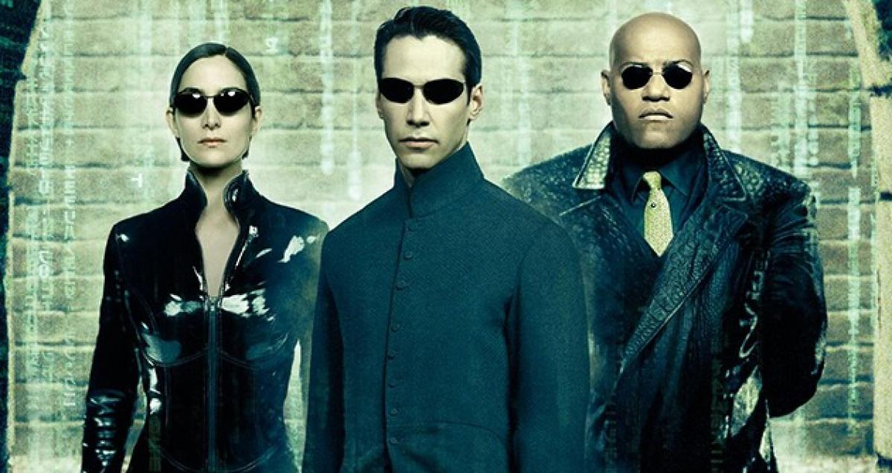
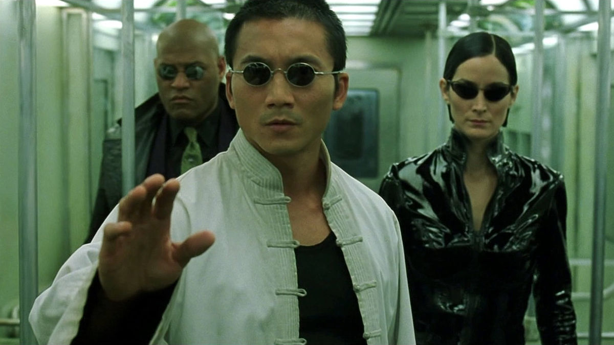

¿Qué sucedería si mañana esta guerra pudiera terminarse? ¿No merece la pena luchar por eso? ¿No merece la pena
morir por eso? Anderson (Keanu Reeves) tomó una costosa decisión cuando decidió hacer la pregunta que Morfeo (Laurence
Fishburne) y Trinity (Carrie-Anne Moss) habían formulado antes que él. Buscar y aceptar la verdad. Liberar su mente de
Matrix.
Todo comienza con la decisión. Ahora, en el segundo capítulo de la trilogía de Matrix, Neo adquiere un mayor dominio de sus extraordinarios poderes
mientras Sión cae sitiada por el Ejército de las Máquinas. Sólo una cuestión de horas separa al último enclave humano en
la Tierra de
250.000 Centinelas programados para destruir a la humanidad. Pero los ciudadanos de Sión, animados por la convicción
de Morfeo de que el Elegido hará realidad la Profecía del Oráculo y pondrá fin a la guerra con las Máquinas, ponen todas
sus esperanzas y expectativas en Neo, que se encuentra bloqueado por visiones inquietantes mientras busca qué medidas tomar.
Nunca podemos ver más allá de una decisión que no entendemos.
Fortalecidos por su amor mutuo y por su creencia en sí mismos,
Neo y Trinity deciden volver a Matrix con Morfeo y desatar su arsenal de extraordinarias destrezas y armas contra las
sistemáticas fuerzas de represión y explotación. Pero existen poderosas figuras dentro de Matrix que niegan el artificio de
la decisión, eludiendo la responsabilidad que supone, al tiempo que se alimentan de las verdades emocionales de los demás.
La decisión es una ilusión creada entre los que tienen poder y los que no lo tienen. Entretanto, hay exiliados como el Agente Smith (Hugo Weaving), cuya inexorable conexión con Neo le obliga a desobedecer
al sistema que ha pedido su eliminación.
The Matrix Revolution

En la conclusión de Matrix Reloaded, Neo (Keanu Reeves) daba otro paso hacia adelante en la búsqueda de la verdad que
había empezado con su viaje al mundo real al comienzo de Matrix, pero esa transformación ha agotado su poder, dejándole a la
deriva en una tierra de nadie entre Matrix y el Mundo de las Máquinas. Mientras Trinity (Carrie-Anne Moss) vela el cuerpo
comatoso de Neo, Morfeo (Laurence Fishburne) se enfrenta a la revelación de que el Elegido, en el que ha invertido toda una
vida de fe, no es más que otro sistema de control inventado por los arquitectos de Matrix. En Matrix Revolutions, el último y
explosivo capítulo de la trilogía de Matrix, la guerra épica entre el hombre y la máquina alcanza un tremendo clímax: el
ejército de Zion, ayudado por valerosos voluntarios civiles como Zee (Nona Gaye) y el Chico (Clayton Watson), lucha
desesperadamente para contener la invasión de los Centinelas mientras el ejército de las Máquinas se adentra en su
fortaleza. Enfrentándose a la aniquilación total, los ciudadanos del último bastión de humanidad luchan no sólo por sus
propias vidas, sino también por el futuro de la humanidad. Pero un elemento desconocido envenena las filas desde dentro: el
descontrolado programa Smith (Hugo Weaving) ha secuestrado astutamente a Bane (Ian Bliss), un miembro de la flota de
aerodeslizadores. Smith, que se hace más poderoso a cada segundo que pasa, está más allá incluso del control de las
Máquinas y ahora amenaza con destruir su imperio junto con el mundo real y Matrix. El Oráculo (Mary Alice) ofrece a Neo sus
últimos consejos, que él acepta sabiendo que ella es un programa y que sus palabras podrían ser simplemente otro nivel de
falsedad en el gran plan de Matrix. Con la ayuda de Niobe (Jada Pinkett Smith), Neo y Trinity deciden viajar más lejos de lo
que cualquier humano se haya atrevido a ir - un peligroso viaje al exterior, a través de la abrasada superficie de la tierra y
hacia el corazón de la amenazadora Ciudad de las Máquinas. En esta enorme y mecanizada metrópolis, Neo se encuentra cara a
cara con el máximo poder del mundo de las Máquinas - el Deus Ex Machina - y llega a un acuerdo que es la única esperanza
para un mundo agonizante. La guerra acabará esta noche, con el destino de Neo y el sino de dos civilizaciones inexorablemente
unidos al resultado de esta catastrófica confrontación con Smith.